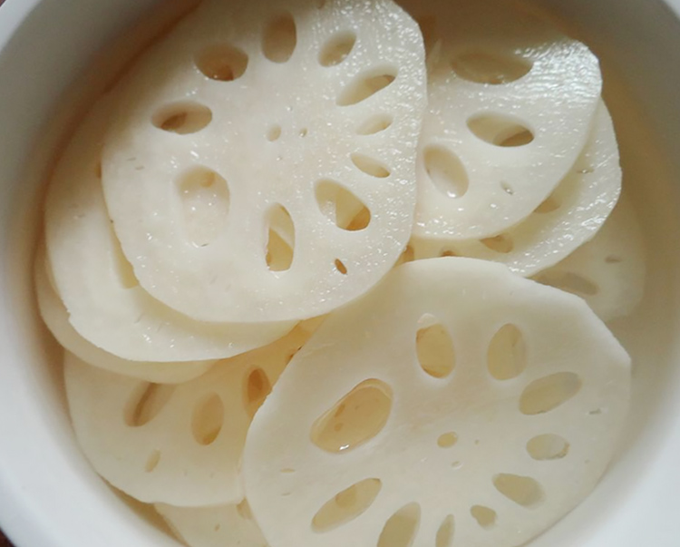
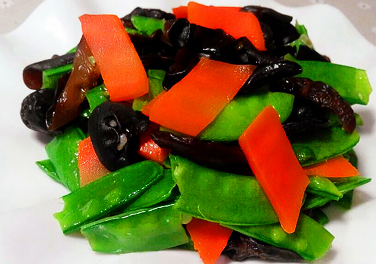
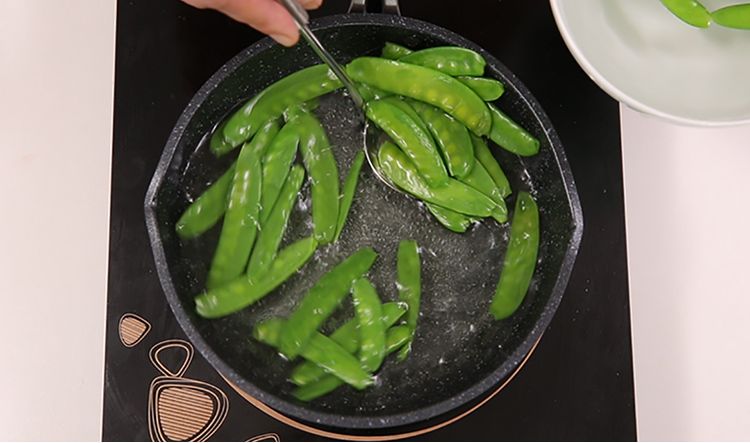

-

1. 莲藕去皮洗净切薄片，清水滴入一匙白醋浸泡十分钟莲藕不会变色
-

2. 木耳用冷水泡发，荷兰豆去丝掐头去尾洗净，胡萝卜洗净切菱形片
-

3. 锅中烧水，水热加入一匙盐一匙油分别放入荷兰豆，莲藕，木耳和胡萝卜根据不同食材选择焯水时间
荷塘小炒
 999
999
 666
666

莉莉
04月06日 17:49
夏天来了要吃清淡一点
荷塘小炒
999
666
夏天来了要吃清淡一点
| 莲藕 | 250g |
| 荷兰豆 | 100g |
| 胡萝卜 | 一根 |
| 木耳 | 一把 |
1. 莲藕去皮洗净切薄片，清水滴入一匙白醋浸泡十分钟莲藕不会变色
2. 木耳用冷水泡发，荷兰豆去丝掐头去尾洗净，胡萝卜洗净切菱形片
3. 锅中烧水，水热加入一匙盐一匙油分别放入荷兰豆，莲藕，木耳和胡萝卜根据不同食材选择焯水时间
1.莲藕加入一匙白醋使莲藕不易变色。2.焯水时间加入油和盐可以更好的保留蔬菜的营养也可以让菜品色泽更鲜艳。3.焯水时间不宜太长
莉莉的更多菜谱